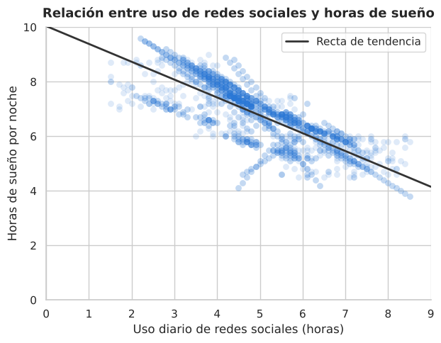
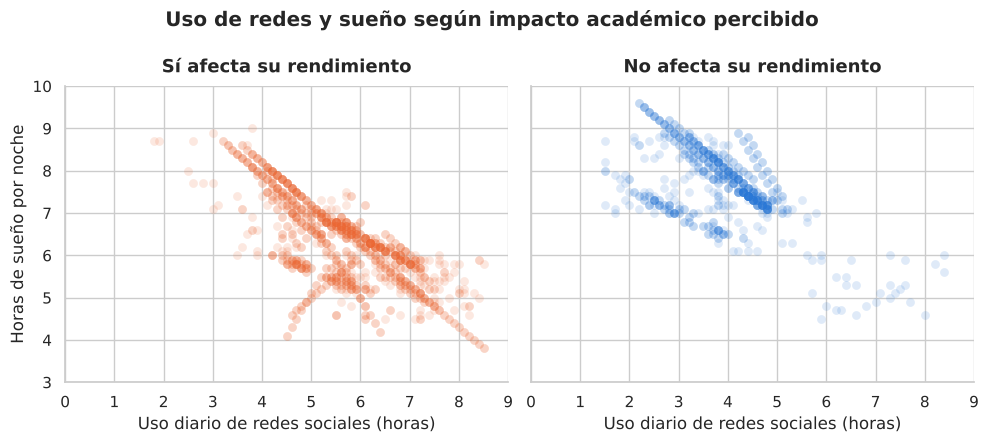
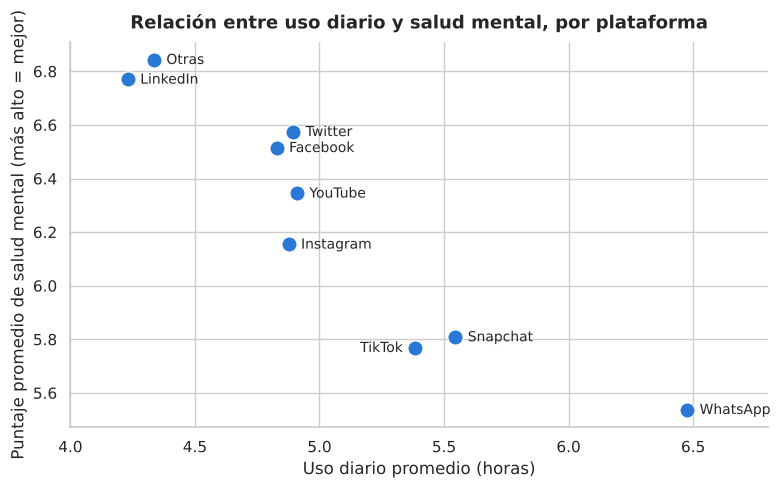

Calidad de los datos
- 705 estudiantes estaban cargados dos veces: se detectaron y se eliminaron donde correspondía.
- El estado sentimental falta en el 59,55 % de los registros.
Trabajo Práctico Grupal · Grupo 14 · 2C 2026
Uso diario, sueño, salud mental y rendimiento académico de 1.743 estudiantes de 110 países.
01 · Pregunta de investigación
¿Cómo impacta el uso de redes sociales en los estudiantes y es ese impacto igual para todos?
Para leer los resultados: en todo el análisis, un puntaje de salud mental más alto significa mejor salud mental (escala de 4 a 9).
02 · Datos y metodología
Fuente: Students Social Media Addiction (Kaggle). Bases de análisis: P1–P2 con 1.743 registros · P3 con 1.038 estudiantes sin duplicados · P4 con 705 registros con estado sentimental.
03 · Resultados · Nivel de desarrollo del país
Promedios por grupo. Las barras de horas usan una escala de 0 a 10 h.
Cautela: grupos desbalanceados y clasificación solo por ingreso. Es una diferencia observada, no una causa.
03 · Resultados · Uso de redes y sueño

Cómo leerlo: la correlación va de −1 a 1; cuanto más cerca de −1, más claro es que cuando una variable sube, la otra baja.
03 · Resultados · Sueño y rendimiento académico

3 de cada 4 de los afectados duermen por debajo de las 7 h recomendadas, contra 1 de cada 8 del resto.
Ojo: el rendimiento es autodeclarado (percepción del estudiante), no una medición de sus notas.
03 · Resultados · Plataformas

YouTube queda en el medio (6,34). “Otras” agrupa WeChat, LINE, KakaoTalk y VKontakte.
03 · Resultados · ¿Es la plataforma o son las horas?
Escala del puntaje: 0 a 9 · correlación uso–salud mental: −0,82.
Al comparar estudiantes con horas de uso parecidas, la brecha entre plataformas se achica de 1,3 a entre 0,7 y 0,9 puntos.
Con uso medio (4–6 h) la diferencia persiste: TikTok 5,89 y Snapchat 5,87 siguen por debajo de Facebook 6,63 y Twitter 6,72.
Con uso alto (> 6 h) el orden se mezcla: WhatsApp pasa a tener el mejor promedio (5,41) y LinkedIn el peor (4,64).
Lo que persiste puede deberse a la plataforma o a que quienes la eligen son distintos: con estos datos no es posible distinguirlo.
03 · Resultados · Género y situación sentimental
P3 · Brecha de género
puntos de diferencia en salud mental, con la misma mediana (6,0).
Donde sí hay diferencia es en quién usa cada red: Instagram es mayoritariamente femenina (193 mujeres, 108 varones); Facebook (120 V, 52 M) y WhatsApp (43 V, 11 M), masculinas.
P4 · Relaciones sentimentales
de uso diario en los tres grupos: no se observa que el uso afecte la situación sentimental.
Cambia qué red se usa: hay más solteros en TikTok (65,6 %) e Instagram (58,2 %), y en Facebook la mayoría está en pareja (57,7 %). Describe perfiles, no un efecto.
04 · Conclusión
Limitaciones Análisis descriptivo, no causal · Rendimiento autodeclarado · Grupos desbalanceados y plataformas con pocos casos.
Próximo paso Seguir a los mismos estudiantes en el tiempo y medir el rendimiento con notas reales.